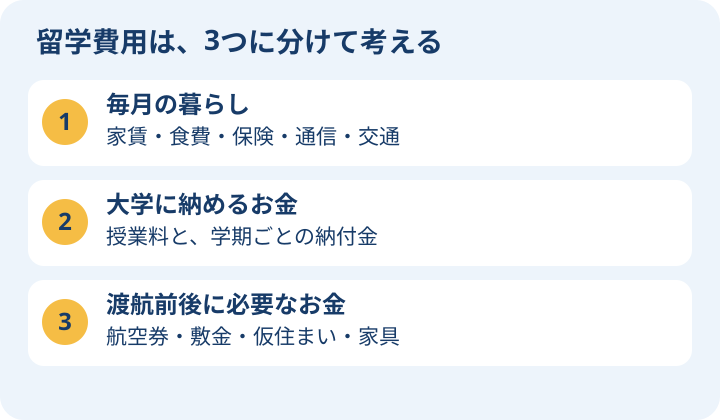

まず「自分ならどう暮らすか」を考えよう
ドイツ留学では、授業料だけでなく、住む街と家賃が家計に大きく影響します。大学が決まる前でも、候補の街で学生寮や共同住宅を探し、通学時間と家賃を比べることから始められます。
高校生へ：自炊できそうか、家族との連絡はいつ取るか、困ったときに誰に相談するかも想像してみましょう。保護者の方へ：毎月の仕送り、最初に必要なお金、急な帰国などに備えるお金を分けて相談すると、予算を整理しやすくなります。

ドイツで暮らすための基礎
通貨はユーロ、首都はベルリンです。大学の制度や費用は州・大学・課程によって違います。都市名だけでなく、実際に通うキャンパスの住所を確かめましょう。日本との時差は通常8時間、夏時間中は7時間です。
生活費を予算にする
ドイツ学術交流会（DAAD）が示す生活費の目安は月900〜1,200ユーロ（1ユーロ＝180円の計算例では約16万〜22万円）ですが、都市・家賃・生活様式で変わります。ミュンヘンなどでは大学の案内する予算がこれを上回ることもあります。授業料・学期納付金・渡航費は別に計算してください。
- 毎月：家賃・光熱費・食費・健康保険・通信・交通・日用品
- 初期費用：航空券・敷金・仮住まい・家具・滞在手続き
- 大学の費用：授業料と学期納付金を分けて確認
- 生活費の目安と、滞在許可の資金証明額は別のものです。
公的統計で見る、食品・飲料の支出と物価
ドイツ連邦統計局（Destatis）の家計調査と消費者物価指数を参照しています。家計調査は「月にいくら使ったか」、物価指数は「以前と比べてどのくらい値段が変わったか」を表す統計です。
ハンガリーの価格表との違い
ハンガリーのKSHには牛乳1Lなどの平均小売価格がありますが、Destatisの消費者物価統計では、品目ごとの平均価格（ユーロ）は公表されていません。このため、以下は1人暮らしの世帯が1か月に支出した平均額です。牛乳1本・卵1パックの値段を示す表ではありません。
1人暮らしの食品・飲料費：品目別の月額
2023年の所得・消費標本調査（EVS）の食品等の詳細記録に基づきます。学生限定の調査ではなく、年齢・収入の異なる1人世帯の平均です。2026年の店頭価格や、学生に必要な最低予算ではありません。
対象：ドイツの単身世帯／単位：1世帯・1か月あたり。統計年：2023年。参照日：2026年10月10日。円の目安は1ユーロ＝177.34円（ECB・2026年10月9日）で換算し、100円単位に丸めています。
| 品目 | 含まれるもの | 平均支出／月（ユーロ・円） |
|---|---|---|
 穀物・穀物製品 穀物・穀物製品 | パン・米・パスタなど | €33（約5,900円） |
 肉類 肉類 | 肉・食肉製品など（魚は別） | €33（約5,900円） |
| 魚・魚介類 | 魚、魚加工品、その他の魚介類 | €7（約1,200円） |
 牛乳・乳製品・卵 牛乳・乳製品・卵 | 牛乳、チーズ、ヨーグルト、卵など | €34（約6,000円） |
| 食用油脂 | 油・バターなど | €6（約1,100円） |
 果物・ナッツ 果物・ナッツ | 果物やナッツ類 | €21（約3,700円） |
| 野菜・いも・豆類など | 野菜、いも類、調理用バナナ、豆類 | €30（約5,300円） |
| 砂糖・菓子・デザート | 砂糖や甘いお菓子など | €16（約2,800円） |
| 調理済み食品・その他の食品 | 調理済みの食事など | €22（約3,900円） |
| 分類不明の食品 | 品目の詳細が記録されていない食品 | €2（約400円） |
 ノンアルコール飲料 ノンアルコール飲料 | アルコールを含まない飲料 | €26（約4,600円） |
| 上の11区分の合計（公表された丸め値の合算） | €230（約40,800円） | |
酒類・たばこは表から除外しています。各区分はユーロ単位に丸められているため、この合計は元データの厳密な総額とは一致しない場合があります。外食はこの食品等の表の対象に含めず、外食予算は別に考えます。イラストは品目のイメージです。
出典：Destatis「世帯人数別の食品・飲料・たばこ支出」2023年 ↗
食品・ノンアルコール飲料の物価の変化
全国の消費者物価指数は、2020年の平均を100として、2026年8月は136.7でした。食品・飲料の価格が2020年平均より約36.7％高い水準であることを示します。「136.7ユーロ」という金額ではありません。
| 対象月 | 指数 |
|---|---|
| 2025年8月 | 136.6 |
| 2026年7月 | 136.8 |
| 2026年8月 | 136.7 |
公表指数から計算すると、2026年8月は前年同月比で約＋0.1％、前月比で約－0.1％です。食品・飲料全体の変化なので、牛乳や肉などがすべて同じ割合で変わったわけではありません。
2026年10月10日に参照した公式表の最新掲載月は2026年8月です。2023年の支出額をこの指数で更新した推計額は掲載していません。
出典：Destatis「消費者物価指数・総合および12分類」 ↗
留学予算への使い方
月額の表で「どの食品にお金がかかるか」をつかみ、物価指数で調査後の値上がりの動きを確認します。実際の予算は、住む街、食べる量、自炊・外食の割合、現在の価格で調整してください。家賃・保険・交通費は別に足します。
補足：買い物の参考になる店舗価格例（公的統計ではありません）
店舗の商品価格例
買い物の予算をつかむための、ドイツのスーパー・ドラッグストアの掲載価格例です。全国平均や価格保証ではありません。容量・店舗・地域・特売で変わります。
確認日：2026年10月9日。米は2026年1月のLidl公表価格。円換算の参考レートは177.34円／EUR（ECB・同日）。イラストは商品カテゴリーのイメージで、各商品の実物写真ではありません。


買い物で覚えておくと便利
€1（約180円）・€10（約1,800円）で考えると目安がつかみやすくなります（計算しやすい丸めた目安）。Pfandは容器の預かり金、€/kg・€/Lは1kg・1Lあたりの比較価格です。米・パン・卵などは、容量と種類を揃えて比べましょう。
スーパーの自社ブランドと専門店・外食では価格が変わります。生活費は食品だけでなく、家賃・保険・交通も含めて予算化してください。
その他の統計：物価・賃金・為替
以下は公式統計です。物価上昇率は前年同月比であり、家賃や食費の金額そのものではありません。平均賃金は学生のアルバイト給与や手取り額ではありません。
統計を読み込み中です。
ユーロから円への換算は参考値です。実際の送金では手数料と適用レートが異なります。最低賃金には適用除外があり、職業訓練の報酬も別制度です。就労できる範囲は在留資格の条件を確認してください。
住居・保険・到着後
- 学生寮は入学許可と同時に確保されるとは限りません。大学のInternational Officeと地域のStudierendenwerkを早めに確認します。
- WGは共同住宅です。家賃に暖房等が含まれるか、敷金、解約期限、住民登録用書類を確認します。
- 入学時には健康保険の確認手続きが必要です。年齢・在籍形態によって保険の選択肢が異なります。
- 到着後は住民登録（Anmeldung）、滞在許可、銀行・携帯電話などを準備します。自治体ごとに予約と書類を確認しましょう。
経験談と制度を使い分ける
生活の工夫や準備の経験は、利用許可をいただいている「留学するならドイツ」 ↗も参考になります。本人の経験が、そのまま全員の制度上の条件になるわけではありません。
家族で作る、留学費用の計算例
仮に生活費を月1,000ユーロで見積もると、12か月で12,000ユーロです。計算練習として1ユーロ＝180円で考えると約216万円になります。これは家賃を含む生活費の仮定で、最新の為替や全都市の必要額を示すものではありません。
この金額に、志望大学の授業料・学期納付金、航空券、敷金、保険の初回支払いなどを足しましょう。敷金は通常の家賃とは別に預けるお金なので、渡航時に使える資金も必要です。実際の見積もりは大学の生活費案内と住居の募集情報で作ります。
住まいの募集で見るところ
- 部屋を1人で使うか、台所・浴室は共用か。
- 表示家賃に暖房・電気・インターネットが含まれるか。
- 通学時間、入居可能日、敷金、最低契約期間を確認する。
- 大学の留学生窓口や学生生活支援団体に、住居探しと相談先を聞く。
初めて読む人のための用語メモ
- DAAD
- ドイツ学術交流会。留学情報や奨学金の公式案内を提供する団体です。
- WG
- Wohngemeinschaftの略。複数の人で台所や浴室などを共有する住まい（シェアハウス）です。
- Studierendenwerk
- 学生寮や食堂、学生生活の相談などを支える地域の学生支援団体です。
- International Office
- 大学の留学生向け窓口。出願や現地生活の相談先を案内してくれます。
- Anmeldung
- 住民登録。引っ越した住所を自治体に届け出る手続きです。
- Sperrkonto（閉鎖口座）
- 毎月引き出せる額に制限のある口座。留学中の生活資金の証明に使われます。
- ECB／EUR／HICP
- ECBは欧州中央銀行、EURはユーロの通貨コード、HICPは物価の変化を比べるための消費者物価指数です。
情報源
確認日：2026年10月9日。出願年度・課程・国籍によって条件が異なります。申請前に公式案内を確認してください。